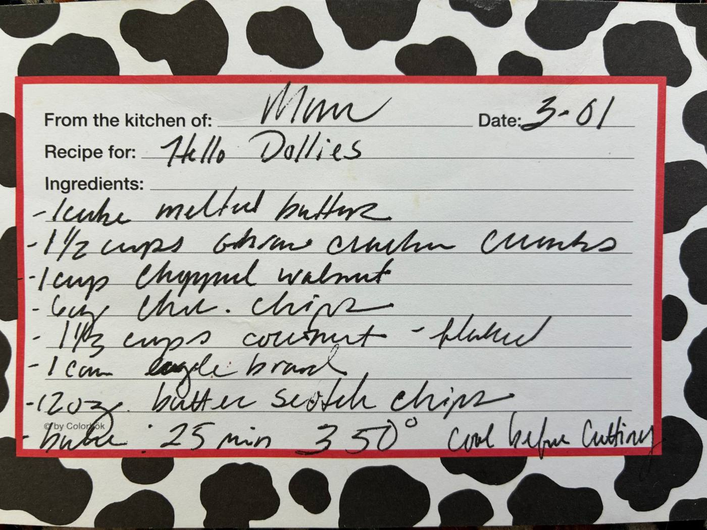

Desserts
Hello Dollies
From the kitchen of Mom · March 2001 (card says “3-01”)
Oven350°F
Bake25 min

Mom's original card · tap to enlarge
Ingredients
Method tap a step to mark it done
- Layer everything in a baking pan: melted butter, then the graham crumbs, walnuts, chocolate chips, butterscotch chips and coconut; pour the condensed milk evenly over the top.
- Bake at 350°F for 25 minutes.
- Cool before cutting into bars.